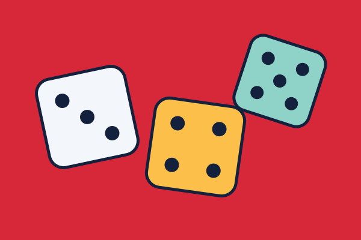

Dixit
Cartas com ilustrações abstratas e uma dica dada por quem conta a história. O desafio é ser entendido, mas não óbvio demais.
Regras simples, partidas rápidas e muita conversa. Bons para reunir amigos e parentes de idades diferentes.

Cartas com ilustrações abstratas e uma dica dada por quem conta a história. O desafio é ser entendido, mas não óbvio demais.
Dois times tentam descobrir suas palavras a partir de dicas de uma só palavra dadas pelos espiões-mestres.
Um jogador tenta adivinhar uma palavra com a ajuda de dicas escritas pelo grupo. Dicas repetidas são eliminadas.
Jogo de cartas para ficar sem cartas na mão primeiro. Fácil de ensinar e adequado para qualquer idade.